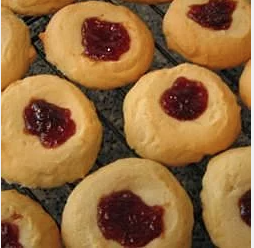

Soldier Buttons

Description
This is a Turkish thumbprint cookie filled with strawberry jam.
Servings:
6
Yield:
1 1/2 dozen
Nutrition Info
Ingredients
- 2 cups all-purpose flour
- 1 cup butter, softened
- 1 cup confectioners' sugar
- 1 egg
- 1 teaspoon vanilla extract
- ¼ cup strawberry preserves
Directions
- Mix together flour, confectioners' sugar, butter or margarine, egg, and vanilla.
- Shape dough with your hands to 1 1/2 inch rounds, and place on greased cookie sheets. Press your finger in
the middle, and fill each hole with jam.
- Bake at 350 degrees F (175 degrees C) for 12 minutes, or until the bottoms are lightly browned.